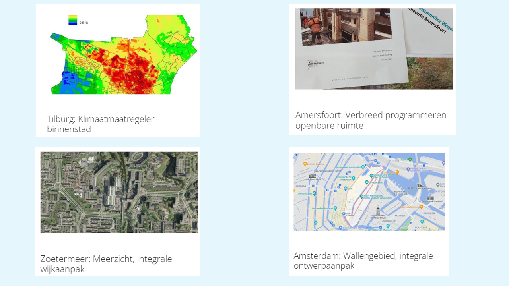
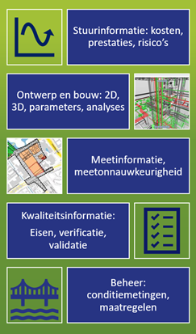
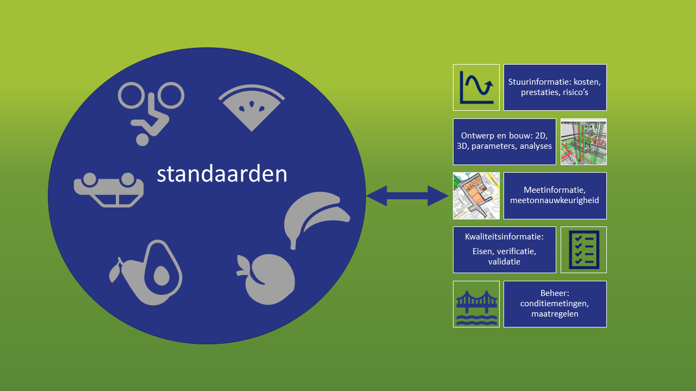
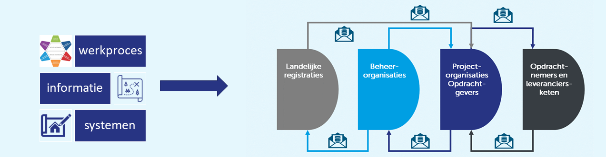
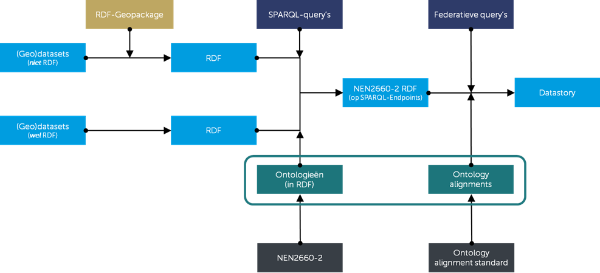

Dit document beschrijft use cases voor de toepassing van open
standaarden in de ondergrond van stedelijke gebieden. Het doel is om
goede informatie te kunnen produceren, publiceren en beheren over de
benodigde functies en het bijjbehorende ruimtegebruik in de ondergrond.
Met deze informatie kunnen gemeenten een integraal antwoord ontwerpen op
maatschappelijke opgaven als energietransitie, klimaat adaptatie,
diverse vervangingsopgaven (bestaande ondergrondse netwerken, kademuren,
riolering etc) en een gezonde en leefbare stad met een goede bodem en
(grond)waterkwaliteit.
Status van dit document
Deze paragraaf beschrijft de status van dit document ten tijde van
publicatie. Het is mogelijk dat er actuelere versies van dit document
bestaan. Bekijk de lijst van CROW technische standaarden op
docs.crow.nl
en alle CROW-publicaties via
www.crow.nl.
Dit is een reviewversie en is nog niet vastgesteld. Een publicatie als
referentieversie impliceert geen onderschrijven door CROW.
Belanghebbenden, geïnteresseerde partijen en anderen worden uitgenodigd
dit document te reviewen en hun commentaar in te zenden vóór 1 januari
2024. Zowel inhoudelijk als technisch commentaar als commentaar
betreffende de implementeerbaarheid is welkom.
GitHub Issues
wordt gebruikt voor de discussie van dit document. Eén issue per
onderwerp vereenvoudigt de verwerking.
Reviewcommentaar mag ook achtergelaten worden als
Hypothes.is annotaties. Gebruik het publieke kanaal voor je
commentaar.
1. Inleiding
Dit onderdeel is niet normatief.
1.1 Aanleiding
De CityDeal Openbare Ruimte
externe link
heeft aan CROW gevraagd om te verkennen wat nodig is aan
datastandaarden en afspraken om informatie over de ondergrond in de
openbare ruimte van gemeenten beter te kunnen opstellen, beheren en
publiceren. Uitgangspunt hierbij is werken op basis van
gebiedscasussen, liefst met een verschillende schaal, verschillende
problematiek en met grote en middelgrote gemeenten. De CityDeal omarmt
de ontwikkelingen van BORius waarbinnen dit projectvoorstel past en
wil met haar bijdrage voor dit project een impuls geven aan BORius.
Hiervoor werken de deelnemende gemeenten nauw samen om de bevindingen
en resultaten in de gemeentelijke praktijk te beproeven en toe te
passen.

Figuur 1
Gebiedscasussen uit de CityDeal
1.2 Context
Met alle maatschappelijke opgaven als energietransitie, klimaat
adaptatie, diverse vervangingsopgaven (bestaande ondergrondse
netwerken, kademuren, riolering etc) en het streven naar een gezonde
en leefbare stad met een goede bodem en (grond)waterkwaliteit, is het
steeds meer een puzzel om in de ondergrond alles passend te krijgen.
Een voorbeeld: ruimte maken voor parkeervakken in het heden, kan
betekenen dat men in de ondergrond straks geen ruimte meer heeft voor
de voorzieningen die nodig zijn voor de energietransitie. Daarom
moeten oplossingen intergaal worden ontwikkeld. Hiervoor is goede
informatie nodig over de functies en het ruimtegebruik in de
ondergrond. De informatie over de ondergrond wordt geproduceerd en
beheerd door verschillende partijen. Bij het overwegen van
aanpassingen aan de openbare ruimte is informatie over de bestaande
situatie en gewenste toekomstige functionaliteiten versnipperd en
niet-samenhangend beschikbaar. De gevolgen van keuzes zijn daarom niet
altijd zichtbaar. Het zou een doorbraak zijn als verschillende tools
op ieder moment de beschikbare informatie over de ondergrond zouden
kunnen raadplegen en ontsluiten. Met daarbij als uitgangspunt dat
data-eigenaren controle houden over hun eigen data en in hun eigen
bedrijfsomgeving kunnen blijven werken.

Figuur 2
Verschillende soorten informatie over het stedelijk gebied
1.2.1 BORius
Het Programma BORius is een initiatief van CROW en Stichting Rioned.
De hoofddoelstelling: “In 2030 beschikken Assetmanagers en hun
(keten)partners in de openbare ruimte en infrastructuur over een
samenhangend stelsel objectstandaarden in de leefomgeving om de data
over hun beheerde assets efficiënt op orde te houden en uit te
wisselen”. De onderliggende doelstellingen van het programma zijn:
Logische informatiestructuur: Beter samenhangende
informatiemodellen voor alle beheerde assets in de Openbare Ruimte
en Infrastructuur
Uitwisselproces: Op meer gestandaardiseerde manier data delen in
de keten voor eenduidige interpretatie
Samenhang, adoptie, en beheer: Meer actuele standaarden en
werkwijzen voor informatieuitwisseling in de keten
1.3 Vraagstelling vanuit CityDeal
Vanuit bovenstaande context komt het Ontwikkelteam OT5 van de CityDeal
Openbare Ruimte tot deze vragen:
Hoe ondersteunen de huidige datastandaarden een datagedreven
integrale aanpak? Sturing op “vitale systemen” wordt steeds
belangrijker. ("Is er een probleem?")
In welke richting en hoe kunnen datastandaarden in samenhang
ontwikkeld worden? Zijn er bijvoorbeeld aanpassingen nodig (bv over
planning) aan de data-standaarden om de tactische ruimte tussen
strategische afstemming (stedelijk programmeren) en uitvoering te
overbruggen? Zijn de data-standaarden ook bruikbaar in het
stedelijke ontwikkelproces van initiatief-plan-ontwerp-uitvoering of
zijn het toch vooral instrumemten voor asset-beheer? ("Welke
oplossingsrichtingen zijn er bij het probleem?)
Hoe belangrijk is het daarbij dat data-standaarden in samenhang
worden doorontwikkeld (of hoe belangrijk is BORius voor het
integraal werken). ("Lossen deze oplossingsrichtingen het probleem
op?")
1.4 Probleem
De huidige werkwijze leidt tot fragmentatie in data, waarbij het in
samenhang bevragen van de data een puzzel is. Ook moet een
databeheerder data naar verschillende bronnen sturen, en zelf de
puzzel maken hoe deze bronnen met ongelijksoortige standaarden te
voeden vanuit de eigen asset data.
In het onderstaande voorbeeld worden voorbeelden gegeven van dit
probleem.
Noot: Standaarden als puzzelstukjes

Figuur 3
Ongelijksoortige standaarden bij de verschillende soorten
informatie over het stedelijk gebied
1.5 Doel, nut en waarde
1.5.1 Korte termijn
Het korte termijn doel van dit project is laten zien in een
showcase, hoe het op elkaar aansluiten van standaarden kan helpen
bij het gebruik van data over de openbare ruimte en infrastructuur.
1.5.2 Middellange termijn
De standaarden moeten waarschijnlijk verder worden uitgebreid om de
volledige informatiebehoefte te dekken, dit zal verder moeten worden
uitgewerkt in het BORius programma.
1.6 Doel document
Dit document beschrijft use-cases, inhoudelijke en technische
uitgangspunten voor standaarden, toepassingsprofielen en
uitwisselafspraken om de ondergrond goed in beeld te brengen. Met dit
document geven we betrokken partijen (binnen en buiten de Citydeal)
inzicht over een aanpak om data-standaarden over de ondergrond met
elkaar te verbinden zodat deze in samenhang toegepast kunnen worden.
Dit plan geeft uiteindelijk input aan de volgende fase die binnen het
programma BORius zal worden opgepakt.
1.7 Aanpak
In eerste instantie was een aanpak geformuleerd, waarbij met
databeheerders zou worden samengewerkt bij het uitwerken van
use cases. Gezien de beperkte beschikbaarheid van dergelijke professionals,
die hard nodig zijn voor operationele taken, is besloten om CROW de
beschikking te geven over datasets waarmee een showcase gemaakt kon
worden. CROW heeft:
Datasets getransformeerd naar linked data
Relaties gelegd tussen de gebruikte informatiemodellen
Laten zien dat je door deze relaties queries kan uitvoeren over
meerdere datasets
Daarmee wordt getoont hoe handig het is, als datasets in linked data
staan en de onderliggende informatiemodellen met elkaar verbonden
zijn.
1.8 Leeswijzer
Dit document beschrijft de volgende zaken:
3.
Use case
beschrijft uses cases met een weergave van het probleem, de
stakeholders, het werkproces en de informatiebehoefte.
4. Technische uitgangspunten beschrijft de technische
uitgangspunten en eisen aan de informatiemodellen en andere
datastandaarden die gebruikt worden in de boven- en ondergrondse
openbare ruimte.
5. Showcase beschrijft de activiteiten die uitgevoerd
zijn om te komen tot een showcase.
5. Conclusies en aanbevelingen geeft de conclusies
uit dit project een aanbevelingen voor het vervolg.
2. Use Cases
Dit onderdeel is niet normatief.
2.1 Definitie use case
Use case
Beschrijving van een systeem vanuit het gebruikersperspectief, met een
actor, de initiator van de interactie, en het systeem zelf als een
opeenvolging van eenvoudige stappen. […] Actoren kunnen
eindgebruikers, andere systemen of hardware (apparatuur) zijn. Elke
usecase is een complete serie van zogenaamde "events", beschreven
vanuit het standpunt van de actor. Bron:
Wikipedia

Figuur 4
De opgave voor partijen die werken in het stedelijke gebied: Van
use case naar begrijpelijke datapakketjes
2.2 Hoog over scenario
In een hoog over scenario valt een use van van het beheer en gebruik
van asset data over rioleringen.
Uitwisseling tussen twee systemen die de integratie van
rioleringsgegevens vereist in een
BOR-systeem (het ene
systeem is conform
IMBOR
ingedeeld, het andere systeem conform een interpretatie van de
GWSW-ontologie)
Uitwisseling tussen twee systemen die de integratie van
BOR-gegevens vereist in
een rioleringssysteem (bijv. verhardingen, wadi's, meubilair) (het
ene systeem is conform
IMBOR
ingedeeld, het andere systeem conform een interpretatie van de
GWSW-ontologie)
GWSW-dataset uitwisselen vanuit een integraal beheersysteem dat conform
IMBOR is
ingedeeld (bijv. hoe kom je van
IMBOR
naar .orox)
IMBOR
als standaard gebruiken voor vaste objectgegevens, maar daar
GWSW-dynamische gegevens bij willen registreren
Gegevens van aannemer die volgens
GWSW
kan inspecteren/etc. opnemen in beheersysteem conform
IMBOR
In een gemeente kan het best zo zijn dat Assetmanager Riolering een
applicatie voor Riolering gebruikt en andere Assetmanagers een
integraal systeem. Die eerste Assetmanager moet dan ofwel data aan de
anderen leveren voor het integrale beeld (situatie 1); ofwel data
ontvangen van de anderen voor het verkrijgen van overzicht/bepaalde
berekeningen (situatie 2).
2.3 Casus Wallengebied: principeprofielen
ondergrondse netten
We hebben de casus onderzocht van "principe-ontwerpen van toekomstige
ondergronde infrastructuur in het Wallengebied" en daarbij de volgende
use cases beschreven:
Use case 1 De ontwerper wil de bestaande ligging
van ondergrondse objecten en relevante bovengrondse objecten in
kaart brengen;
Use case 2 De ontwerper wil weten wat de eisen en
parameters zijn bij het ontwerpen van een nieuwe situatie;
Use case 3 De ontwerper wil weten welke ondergronds
objecten aanwezig moeten zijn in de nieuwe situatie: input vanuit
beleid en de planfase.
Use case 4 De ontwerper wil principeprofielen maken
voor de inrichting van de ondergrond van een straat met aan één
zijde gebouwen en aan de andere zijde een gracht en daarbij de
afwegingen weergeven bij het ontwerp, zoals afwijking van de eisen
over afstanden tot andere objecten omdat er niet voldoende ruimte
is.
Use case 5 De ontwerper wil aangeven welke
variabelen leiden tot welk principeprofiel, zodat er een onderbouwde
afweging gemaakt kan worden voor het te kiezen principeprofiel bij
elke straat.
2.4 Use case 1: in kaart brengen bestaande
situatie
2.4.1 Doelstelling
De ontwerper wil de bestaande ligging van ondergrondse objecten en
relevante bovengrondse objecten in kaart brengen. Het gaat om
gegevens die gestructureerd zijn via
GWSW,
IMBOR,
IMKL,
IMGEo.
2.4.2 Actoren
2.4.2.1 Gebruikers
Databeheerders
Ontwerpers binnen een integraal project van een gemeente
2.4.3 Beschrijving
2.4.3.1 Stap 1: Verzamelen datasets
De ontwerper verzoekt de beheerders van de assets om de datasets
die nodig zijn voor het in kaart brengen van de bestaande situatie
aan te leveren. Deze datasets zijn gebaseerd op de open
standaarden
IMBOR,
IMKL,
IMGeo en
GWSW
(en meer?)
Uit het Rioleringsysteem moeten type, liggings- en
dimensiegegevens komen van een representatief aantal objecten;
Uit het BORsysteem moeten type, liggings- en dimensiegegevens
komen van een representatief aantal objecten;
Uit de systemen van Netbeheerders en het Kadaster (Klik) de
liggingssgegevens van bestaande kabels en leidingen.
Alle datasets zijn als RDF beschikbaar en geclassificeerd aan
respectievelijk
GWSW
en
IMBOR
en andere standaarden.
2.4.3.2 Stap 2: Verwerken datasets
De ontwerper verwerkt de aangeleverde datasets in het
ontwerpproces. Hierbij worden de datasets geanalyseerd en omgezet
naar een bruikbaar format.
Middels de alignment die gemaakt is tussen standaarden worden
conclusies getrokken over welke objecten hetzelfde zijn en
zodoende welke gegevens gecombineerd kunnen worden;
Deze 'nieuwe' gegevenset wordt beschikbaar gemaakt in een
(visueel) systeem;
De gebruiker gebruikt de gecombineerde gegevens om het
ondergrondse ruimtegebruik in kaart te hebben.
2.4.3.3 Stap 3: Onderzoeken
compleetheid en informatie
Voordat de ontwerper aan de slag gaat met de verwerkte datasets,
wordt onderzocht of de datasets compleet zijn en voldoende
informatie bevatten om mee te kunnen werken.
2.4.3.4 Stap 4: In kaart brengen
bestaande situatie
Met behulp van de verwerkte datasets en eventueel aangevuld met
eigen metingen, brengt de ontwerper de bestaande situatie in
kaart.
2.4.3.5 Alternatieve scenario's
Als de gegevens niet correct worden gecombineerd, kan het zijn
dat het volledige ondergrondse ruimtegebruik niet correct wordt
weergegeven. In dat geval moet de gebruiker de gegevens opnieuw
combineren of de fout corrigeren.
Als er wijzigingen worden aangebracht in de beiden datsets,
moeten de gegevens opnieuw worden geëxporteerd en gecombineerd
om het volledige ondergrondse ruimtegebruik up-to-date te
houden.
2.4.4 Data bestaande situatie
2.4.4.1 Bomen
De ontwerper heeft de volgende input nodig vanuit de
assetbeheerder / bestaande situatie:
Welke gegevens zijn nodig om bij het ontwerpen rekening te
kunnen houden met de bestaande bomen?
Welke gegevens zijn bekend bij de beheerder van de openbare
ruimte?
Welke informatiemodellen worden gebruikt door deze beheerder?
Dekken deze informatiemodellen de informatiebehoefte af?
2.4.4.2 Rioleringen
De ontwerper heeft de volgende input nodig vanuit de
assetbeheerder / bestaande situatie
Welke gegevens zijn nodig om bij het ontwerpen rekening te
kunnen houden met de bestaande riolering?
Wat zijn de maten en ligging van de riolering?
Welke gegevens zijn bekend bij de beheerder van de riolering?
Welke informatiemodellen worden gebruikt door deze beheerder?
IMBOR
en
GWSW?
Dekken deze informatiemodellen de informatiebehoefte af?
Wat voor objecten liggen er boven de uit te graven/te vervangen
riolering?
Wat is het afgekoppelde oppervlak?
Zijn de afwateringsvoorzieningen voldoende voor dit verharde
gebied?
Wat is de doorstroming van het oppervlaktewatersysteem?
Wat is de bergingscapaciteit van het oppervlaktewatersysteem?
2.4.4.3 Electriciteitskabels
De ontwerper heeft de volgende input nodig vanuit de
assetbeheerder / bestaande situatie
Welke gegevens zijn nodig om bij het ontwerpen rekening te
kunnen houden met de bestaande electriciteitskabels?
Wat zijn de maten en ligging van de electricitietskabels?
Amsterdam werkt met een uitlegschema: per type kabel
diameter, dekking (=diepte) en vrije werkruimte
(=schrikruimte, minimale afstand tot andere objecten.) In
IMKL
wordt geen onderscheid gemaakt voor type kabels, transport,
middenspanningskabel of huisaansluiting dus weet de
ontwerper niet zeker of hij de juiste maten kent.
Welke gegevens zijn bekend bij de beheerders van de
electriciteitskabels?
Welke informatiemodellen worden gebruikt door deze beheerders?
IMBOR
en/of
IMKL?
Dekken deze informatiemodellen de informatiebehoefte af?
2.5 Use Case 2: ontwerpuitgangspunten
nieuwe situatie
2.5.1 Doelstelling
De ontwerper wil weten wat de eisen en parameters zijn bij het
ontwerpen van een nieuwe situatie, om te kunnen bepalen waar
infrastructuur mag komen en hoeveel ruimte hiervoor gereserveerd
moet worden.
2.5.2 Actoren
2.5.2.1 Leveranciers
Kennisinstituten die normen maken
Assetmanagementorganisaties die eigen eisen maken
2.5.2.2 Gebruikers
Ontwerpers binnen een integraal project van een gemeente
2.5.3 Beschrijving
De ontwerper verzamelt alle eisen die in relevante normen en
standaarden staan, en die van de asset management organisaties, en
kan deze eisen gebruiken tijdens het bepalen van de ligging en de
ruimtereservering van ondergrondse infra.
2.5.3.1 Alternative scenario's
De ontwerper moet soms zelf eisen afleiden uit documenten of
achterhalen via de beheerder.
2.5.4 Data
2.5.4.1 Bomen
De ontwerper heeft de volgende input nodig vanuit normen,
standaarden met ontwerparameters en eisen
Welke parameters zijn nodig om te weten hoeveel ruimte de
wortels van de boom nodig hebben?
Is hier een datastandaard of informatiemodel voor?
Dekt deze standaard de informatiebehoefte af?
Welke andere eisen zijn er, om te garanderen dat de boom gezond
blijft?
Zijn er assets, waarbij een zekere afstand moet worden
aangehouden tot de stam van de boom?
Is hier een datastandaard of informatiemodel voor?
Dekt deze standaard de informatiebehoefte af?
Waar wijkt de huidige situatie af van die regels?
2.5.4.2 Rioleringen
De ontwerper heeft de volgende input nodig vanuit normen,
standaarden met ontwerparameters en eisen
Welke parameters/eisen zijn nodig om te weten wat de afmetingen
moeten zijn van de onderdelen van het riool en welke ligging het
riool kan hebben? Welke diepte mag het riool hebben?
Is hier een datastandaard of informatiemodel voor?
GWSW?
Dekt deze standaard de informatiebehoefte af?
Zijn er assets, waarbij een zekere afstand moet worden
aangehouden tot onderdelen van het riool?
Is hier een datastandaard of informatiemodel voor?
Dekt deze standaard de informatiebehoefte af?
Waar wijkt de huidige situatie af van de ontwerpparameters?
Leidt dit tot alternatieve "supotimale maar geaccepteerde
afwijkingen van de eisen en parameters?"
Je hebt voor bepaalde analyses van afwatering en je
oppervlaktewaternetwerk ook
BOR-gegevens nodig.
Een oppervlaktewatersysteem bestaat ook uit Watergangen,
Watervlaktes, Duikers etc. Het is vaak zo dat gemeentes en
waterschappen de waterpeilen, oppervlaktes, bergende vermogens
bepalen. Het bergende oppervlak en het bergende vermogen van
verharding en gras- en kruidachtigen kan ook relevant zijn,
evenals het type verharding (Betonverharding,
Elementenverharding, Asfaltverharding).
2.5.4.3 Electriciteitskabels
De ontwerper heeft de volgende input nodig vanuit normen,
standaarden met ontwerparameters en eisen
waar mogen de kabels en leidingen liggen?
welke parameters hebben deze kabels en leidingen:
hoe dik moeten ze zijn,
welke regels zijn er voor diepte van de kabels?
Welke schrikafstanden hebben de kabels ten opzichte van andere
kabels, huizen en andere objecten? * Waar wijkt de huidige
afstand af van die regels? > Leidt dit tot alternatieve
"suboptimale maar geaccepteerde afwijkingen van de eisen en
parameters?"
Is hier een datastandaard of informatiemodel voor?
IMKL?
Dekt deze standaard de informatiebehoefte af?
2.6 Use Case 3: In kaart brengen beleid en
plannen
2.6.1 Doelstelling
De ontwerper wil weten welke ondergronds objecten aanwezig moeten
zijn in de nieuwe situatie: input vanuit beleid en de planfase.
2.6.2 Actoren
2.6.2.1 Leveranciers
Asset managers
Beleidsmakers
2.6.2.2 Gebruikers
Ontwerpers binnen een integraal project van een gemeente
2.6.3 Beschrijving
De ontwerper verzamelt data van plannen en het beleid om te weten
met welke scenario's qua inrichting van de openbare ruimte rekening
gehouden moet worden.
2.6.3.1 Alternative scenario's
De ontwerper moet soms zelf plannen en scenario's afleiden uit
documenten of achterhalen via de beheerder.
2.6.4 Data
2.6.4.1 Bomen
De ontwerper heeft de volgende input nodig vanuit beleidsdoelen en
een strategisch assetmanagementplan:
Is er een plankaart / toekomstvisie / groenplan
bomenarchitectuur waarop aangegeven staat welke bestaande en
nieuwe bomen in de toekomst aanwezig moeten zijn?
Is er een datastandaard voor deze informatie?
Dekt deze standaard de informatiebehoefte af?
2.6.4.2 Rioleringen
De ontwerper heeft de volgende input nodig vanuit beleidsdoelen en
een strategisch assetmanagementplan:
Is er een plankaart / toekomstvisie / strategisch plan waarop
aangegeven staat welke stromen in de toekomst moeten worden
afgevoerd via de riolering? Alleen het afvalwater van
huishoudens en bedrijven, of ook van hemelwater? Is berekend
waar afvoer van hemelwater noodzakelijk blijft? Welke
bergingscapaciteit gewenst is?
Zit deze informatie in het
GWSW? Is hier een andere informatiestandaard voor?
Dekt deze standaard de informatiebehoefte af?
2.6.4.3 Electriciteitskabels
De ontwerper heeft als doel een ruimtereservering te kunnen maken
voor toekomstige kabels en leidingen. De ontwerper heeft de
volgende input nodig vanuit beleidsdoelen en een strategisch
assetmanagementplan:
Is er een plankaart / toekomstvisie / strategisch plan waarop
aangegeven staat welke toekomstige capaciteit gevraagd wordt per
aansluiting? Is dit afhankelijk van een scenario voor de
energietransitie?
Zit deze informatie in
IMKL?
Is hier een andere informatiestandaard voor?
Dekt deze standaard de informatiebehoefte af?
2.7 Use case 4 Opstellen principeprofielen
2.7.1 Doelstelling
De ontwerper wil principeprofielen maken voor de inrichting van de
ondergrond van een straat met aan één zijde gebouwen en aan de
andere zijde een gracht en daarbij de afwegingen weergeven bij het
ontwerp, zoals afwijking van de eisen over afstanden tot andere
objecten omdat er niet voldoende ruimte is.
2.7.2 Actoren
2.7.2.1 Gebruikers
Ontwerpers binnen een integraal project van een gemeente
Netbeheerders
2.7.3 Beschrijving
De ontwerper maakt principeprofielen op basis van de benodigde
infrastructuur en de beschikbare ruimte. In deze principeprofielen
wordt de ruimtereservering geschetst voor objecten.
2.7.4 Data
De ontwerper genereert hier principeprofielen, dwarsdoorsnedes van
een straat met de bijbehorende verificatie van eisen.
2.8 Use case 5 Afwegingskader
2.8.1 Doelstelling
De ontwerper wil aangeven welke variabelen leiden tot welk
principeprofiel, zodat er een onderbouwde afweging gemaakt kan
worden voor het te kiezen principeprofiel bij elke straat.
2.8.2 Actoren
2.8.2.1 Gebruikers
Ontwerpers binnen een integraal project van een gemeente
Netbeheerders
2.8.3 Beschrijving
De ontwerper geeft bij elk principeprofiel aan, voor welk scenario
deze geldt en onder welke omstandigheden dit profiel kan worden
toegepast.
2.8.4 Data
De ontwerper genereert hier een afweginskader bij de
principeprofielen en/of metadata.
3. Technische uitgangspunten
Dit onderdeel is niet normatief.
3.1 Inleiding
Dit hoofdstuk beschrijft de technische uitgangspunten en eisen aan de
informatiemodellen en andere datastandaarden die gebruikt worden in de
boven- en ondergrondse openbare ruimte.
3.2 NEN 2660-2
Een basaal uitgangspunt is dat alle standaarden gemodelleerd worden
volgens de [NEN_2660_2_2022]. Dit zorgt ervoor dat standaarden beter op elkaar kunnen worden
aangesloten.
3.3 Duurzame correcte mapping
Om data in samenhang te kunnen bevragen is het nodig dat verschillende
standaarden/modellen op elkaar 'gemapt' worden. In dit specifieke
geval gaat het om de
IMBOR
ontologie en de
GWSW
ontologie. Data over de ondergrond is namelijk geclassificeerd naar
die twee ontologieën. En inhoudelijk vergelijking tussen de twee is
relatief eenvoudig te maken. CROW en Rioned hebben dit ook reeds
gedaan. Echter de methode hiervoor en de vastlegging hiervan is
specifiek voor deze mapping. Hierdoor is het voor gebruikers en
softwareleveranciers ondoenlijk om zich hier op te baseren.
Wat nog ontbreekt is een standaardaanpak voor ontologie matching (ook
wel "mapping" of "linking" genoemd). Ontologie matching is belangrijk
in de heterogene omgeving waarin ontologieën worden ontworpen,
ontwikkeld en geacht worden te werken. Methodologisch is het de moeite
waard om relaties tussen ontologieën uit te drukken omdat dit het
volgende mogelijk maakt:
Beheersbare ontologieën: Werken met kleine en zelfvoorzienende
modulaire ontologieën, in plaats van monolithische ontologieën.
Data transformatie: Het uitdrukken van de verbanden tussen twee
versies van dezelfde ontologie (de delta) of tussen versies van
andere ontologieën, en dus het bijwerken van gegevens van de ene
ontologie naar de andere.
Gezamenlijke basis gebruiken: Het terugplaatsen van een ontologie in
de context van een toplevel ontologie, waardoor deze meer
consensueel wordt met andere ontologieën van dat domein.
Conjunctief gebruik: Door ontologieën samen te gebruiken in
hetzelfde proces of dezelfde toepassing kunnen interdisciplinaire
projecten beter op elkaar aansluiten.
De laatste reden is vrij dringend. Momenteel wordt dit vaak
overgelaten aan de softwareleveranciers of modelleurs, terwijl
ontologie- (of "standaard"-)beheerders hier meer aandacht aan zouden
kunnen en moeten besteden. Zeker softwareleveranciers die ontologieën
moeten gebruiken in hun software hebben te maken met meerdere,
gedistribueerde en evoluerende ontologieën. Voor hen is duidelijkheid
over hoe die in samenhang te gebruiken zeer belangrijk.
Voorspelbaarheid over de structuur van de afstemming en de informatie
over herkomst, auteurschap en versiebeheer van deze afstemming wordt
beschouwd als een grote stimulans voor toepassing.
Binnen dit project hanteren (en ontwikkelen we tegelijkertijd) daarom
de
Ontology whitepaper
van CROW.
4. Showcase
4.1 Inleiding
CROW heeft een showcase gemaakt voor het verbinden van datastandaarden
in de ondergrond met datasets van gemeente Amsterdam en
samenwerkpartners in het Wallengebied.
4.2 Doel showcase
Het doel van dit project was aantonen dat 1) het mogelijk is om data
uit verschillende gedistribueerde bronnen te combineren en 2) aan te
tonen dat dit meerwaarde / meer inzicht geeft. Om dit aan te tonen is
besloten om binnen één gebied data te combineren uit verschillende
‘bronnen’. In dit geval was dit:
KLIC data (bekend van de graafmeldingen; kabels en leidingen)
IMBOR
data (beheer openbare ruimte)
GWSW
data (stedelijk water)
Liander data (netbeheerder)
Door deze bronnen te combineren zou er een nagenoeg volledig overzicht
moeten kunnen ontstaan van het ondergronds ruimtegebruik.
4.3 Aanpak
Om het doel te realiseren zijn (hoog over) de volgende stappen
ondernomen
Verschillende RDF-sets beschikbaar gesteld als SPARQL-Endpoints
Federatieve query’s gemaakt
Datastory gemaakt
4.4 Verzamelen datasets en ontologiën
Allereerst zijn er datasets verzameld. Dit betreft instantiedata van
assets binnen het Wallengebied. Specialisten vanuit Amsterdam hebben
data uit verschillende pakketten/bronnen geleverd, te weten
IMBOR-data,
GWSW-data, KLIC-data en Liander-data. Deze datasets hebben allemaal hun
eigen datamodel (ontologie); deze modellen zijn ook verzameld.
Vervolgens is een representatieve selectie gemaakt van assets binnen
een selectief gebied. Dit is gedaan om het proces overzichtelijk te
houden.
Deze datasets zijn niet open beschikbaar. Wel is er een screenshot
gemaakt om een idee te geven.
Figuur 5
Een screenshot van de representatieve dataset (het gebied en de
lagen)
4.5 Van Geodata naar NEN 2660-2
Behalve de
GWSW-data, waren de gegevenssets niet beschikbaar in RDF, maar in
verscheidene GIS-formaten. Om de data goed te combineren was een
omzetting naar RDF (de techniek achter LinkedData) nodig. Redmer van
CROW heeft hiervoor
opensource software
geschreven[1]. Hiermee kan op een generieke
manier een GeoPackage omgezet worden naar RDF. Met de genoemde
software kan vanuit een GeoPackage zeer platte (generieke) linked data
worden gegenereerd. Rijen uit featuretabellen worden geo:Features met
arbitraire relaties en een geo:Geometry. Rijen uit
niet-feature-tabellen worden geïnstantieerd met arbitraire
eigenschappen.
Deze generieke RDF is omgezet naar de regels die gesteld worden
volgens de NEN2660-2. Omdat RDF zo flexibel is, is meestal een
‘schema-definitie’ nodig om de data die in RDF staat eenvoudig
leesbaar te maken. Hier wordt bijvoorbeeld gezegd waar precies in de
RDF de geometrie van een feature gevonden kan worden.
[1] Deze software is opensource ontwikkeld en gedistribueerd en wordt
nu al gebruikt/bekeken door andere organisaties waaronder Geonovum
(https://github.com/redmer/rdf-geopackage)
4.6 Ontology alignment
Het volgende innovatieve-onderdeel van het project is het maken van
een ontology-alignment. Hier wordt er vanuit gegaan dat de beheerders
van de ontologieën (bijvoorbeeld CROW voor
IMBOR en
Rioned voor
GWSW)
definiëren hoe hun ontologieën zich tot elkaar verhouden. Door dit
niet op een project of bij een bronhouder te doen, maar juist bij de
partij die verstand heeft van het model hoeft dit maar één keer gedaan
te worden. Er is/was echter geen standaard voor het maken,
distribueren en het beheren van zo’n alignment. Daarom is
deze voorgesteld[2] door CROW. Vervolgens is voor dit
project een representatief voorbeeld-alignment gemaakt van
IMBOR,
GWSW,
KLIC en Liander.
Door dit extra model worden bijvoorbeeld de relaties tussen
GWSW
en
IMBOR
klassen geformaliseerd, maar ook tussen
GWSW
en
IMBOR
eigenschappen
Deze alignment is een eerste opzet, die wordt vanuit het
IMBOR en
GWSW
project geformaliseerd.
[2] Dit whitepaper is ook opensource ontwikkeld en gedistribueerd en
is inmiddels door meerdere partijen gereviewd. De hoop is hier een
industrie standaard van te maken.
(https://docs.crow.nl/ontology-alignment/whitepaper/)
4.7 Datastory maken
Om vervolgens het concept en de waarde hiervan aan te tonen zijn de
verschillende RDF-sets geüpload naar een LinkedData-platform. Hierdoor
kan de data nu middels een SPARQL-Endpoint aangeroepen worden. Er zijn
federatieve query’s gemaakt (query’s die meerdere datasets
tegelijkertijd bevragen) waarin verschillende usecases (aan)getoond
worden. Deze zijn verwerkt in een datastory, met uitleg, interactieve
tabellen en kaarten. Nu kunnen we dus federatieve vragen stellen als:
‘geef me alles in dit gebied met een aanlegjaar na 1950’. We creeren
dus volledig overzicht over de ‘silo's’ heen.
De aanpak van de showcase wordt in onderstaande afbeelding
gevisualiseerd. Met de kaders wordt de essentiële stap aangegeven die
voor dit project van belang is: het structureren en laten samenhangen
van standaarden.

Figuur 6
De aanpak van de showcase
4.8 Resultaat
Het resultaat is moeilijk te omschrijven in woorden, vandaar dat dit
geprobeerd is te vatten in een datastory. Deze story is online te
raadplegen (zie bijlage) en vertelt het verhaal van wat er mogelijk is
als data en datastandaarden in samenhang bevraagd kunnen worden
Logingegevens datastory: Datastandaarden in Samenhang
Als je op de link klikt, krijg je eerst de mededeling dat er geen
datastory te vinden is. Log je vervolgens in, dan zie je de datastory.
Lees deze rustig door en zoom in-en uit en klik op de bijgevoegde
kaarten voor ondersteuning van het verhaal. Wat je kan doen in de
datastory, het bevragen van de data, kan natuurlijk allemaal al lang
in GIS. Het verschil is hier de onzichtbare werking van het publiceren
van verschillende datasets op basis van verschillende, maar
samenhangende datastandaarden. En het feit dat je dan, zonder de data
nog verder te moeten inlezen, cureren en bewerken aan de slag kan
gaan.
Noot: Beschikbaarheid datastory
Deze datastory blijft in de lucht tot 1 januari 2025. Daarna is deze
alleen nog beschikbaar als pdf.
Graag datastory pdf-en, op GitHub plaatsen en link opnemen in de
ReSpec
5. Conclusie en aanbevelingen
Dit onderdeel is niet normatief.
5.1 Conclusie
Beiden doelen van dit project zijn geslaagd. Er is aangetoond dat vier
verschillende datasets gecombineerd bevraagd kunnen worden en dit
terwijl ze live bij de bronhouder opgevraagd zijn. Middels de
datastory is de meerwaarde aangetoond door te laten zien dat het
combineren van sets meer informatie oplevert en dat overlap in data
aangetoond kan worden. Een meer volledig overzicht van data
betreffende assets met ondergronds ruimtegebruik is hiermee mogelijk.
5.2 Aanbevelingen
5.2.1 Voorwaarden slagen samenhang
Er zijn twee belangrijke voorwaarden aan het slagen van
Datastandaarden in Samenhang en BIM Ondergrond:
Assetbeheerders zullen voor hun areaaldata de NEN2660-2 moeten
adopteren. Dit is zodat de RDF met relatief eenvoudige generieke
query’s bevraagd kan worden. Dit betekent dat gemeenten en andere
asset beheerders hun asset data als linked data moeten gaan
publiceren. Daarnaast zullen als partijen de data niet open
beschikbaar stellen ook afspraken gemaakt moeten worden over
toegang en beheer van de data. Hiervoor zijn deels concurrerende
afsprakenstelsels beschikbaar zoals het Federatief Datastelsel en
het Digitaal Stelsel Gebouwde Omgeviing.
Organisaties die datastandaarden beheren (zoals CROW en Rioned)
zullen zelf aan moeten gaan geven hoe hun standaarden zich tot
elkaar verhouden EN dit beschikbaar stellen middels een
afgesproken standaard. Wanneer er aan deze voorwaarden voldaan
wordt, is een monumentale stap mogelijk richting federatief data
te beschikking stellen en hiermee een volledig overzicht krijgen
van de assets in heel Nederland.
5.2.2 Beheer
Om standaarden op elkaar te laten aansluiten, is een gezamenlijk
beheer nodig van de aansluiting. Bij wijziging van één van de
standaarden, zal de aansluiting opnieuw moeten worden vastgesteld.
Dit vraagt om organisatorische inspanningen in samenwerking en
beheer van de aansluiting. Duidelijk moet zijn of voor de
aansluiting ook een openbare consultatie moet worden doorlopen, of
een goedkeuringsprocedure vanuit beide beheerorganisaties.
5.2.3 Toevallige bevindingen
Bij het uitwerken van de use cases kwam naar voren, dat nog niet
alle informatie die gedeeld moet worden tussen partijen als in een
informatiemodel is opgenomen. Er zullen daarom uitbreidingen moeten
worden afgesproken:
In
IMKL zou
opgenomen kunnen worden: de ruimtereservering voor toekomstige
netinfrastructuur, zodat netbeheerders deze informatie kunnen
delen met gemeenten.
In
IMKL
wordt geen onderscheid gemaakt voor type kabels, transport,
middenspanningskabel of huisaansluiting dus weet de ontwerper niet
zeker of hij de juiste maten kent van de aangeleverde data. Dit
zou aan
IMKL
kunnen worden toegevoegd om de bestaande situatie beter te kunnen
uitwisselen.
In
IMBOR
zou de ruimtereservering voor toekomstige infrastructuur kunnen
worden opgenomen, zodat deze informatie vanuit projecten al
gedeeld kan worden vóór uitvoering. Deze data kunnen ook gebruikt
worden om meerdere toekomstscenario's te kunnen visualiseren en
afwegen. Daarmee zou voor toekomstige infrastructuur een corridor
aangegeven kunnen worden door een gemeente, waarbinnen
netbeheerders naar oplossingen kunnen zoeken.
6. Conformiteit
Naast onderdelen die als niet normatief gemarkeerd zijn, zijn ook alle
diagrammen, voorbeelden, en noten in dit document niet normatief. Verder
is alles in dit document normatief.